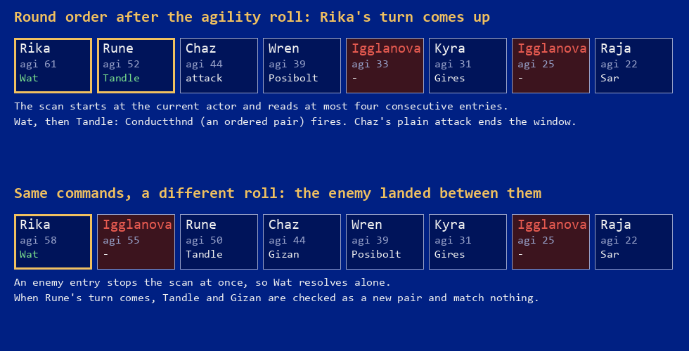

Home › Phantasy Star IV › The fifteenth combination
Phantasy Star IV — The Fifteenth Combination
What the combo tables in the ROM say, and how a combo is really triggered
The short version
Page 19 of Sega's US manual ends its section on Combination Attacks with a dare: "There are a total of 15 Combination Attacks. Can you find them all?" In thirty years players have found fourteen, and the missing one has been searched for in every corner of the game. It is not in the ROM. The combo data table has fifteen rows, but row zero is the empty "no combo" entry; the trigger table, the name table and the detection loop all count fourteen. Nothing is hidden, disabled or unfinished.
What the same code does contain is a precise account of how a combo happens, and it disagrees with the manual on the part that matters. Turn order is not "descending order of power": it is agility plus a random bonus, re-rolled every round. A combo is found by scanning at most four consecutive entries of that order from the current actor, and any enemy or plain attack in the way stops the scan. Three of the fourteen combos care about the order of their pieces; the other eleven accept any permutation. One of them can only be performed between one dungeon and the next.
What the manual says
The relevant paragraph is short enough to quote in full. "In order to combine the moves, the attacks must occur in succession (i.e. for the Blizzard Attack, Chaz's Zan must immediately follow Rune's Wat). Since characters attack in a descending order of power (most powerful attacks come first), you must assign the other characters less powerful attacks. As soon as you discover a Combination Attack, write it down! You can even put it into a macro later." Then the dare.
Two of those sentences are right, one is wrong, and one is half right. Succession is the whole mechanism. Macros are the practical way to get it. The order of turns has nothing to do with the power of the attacks. And for Blizzard specifically, Zan does not have to follow Wat; the two only have to be adjacent, in either order. The code for all of this is below.
The tables
The disassembly by lory1990 rebuilds the US ROM byte for byte and names the data. Three tables and one loop are involved.
ComboData, at $285424, is fifteen rows of eight bytes.
Each row says what the combo does: effect (damage or instant death), targeting (one enemy
or all), the success threshold for the death combos, which enemy stat resists it, and its
element. Row zero is all zeros and is the value a fighter carries when no combo is
pending; the engine indexes the table with the combo number and number zero has to mean
"none". Rows one to fourteen are Paradin Blow to Destruction.
ComboSetupData, at $28549C, is the trigger table: for
each of the fourteen combos, how many participants it needs, whether their order matters,
and a list of accepted technique and skill combinations terminated by $FF.
There are 67 accepted lists in total, most of them for Firestorm, which takes any of the
three Foi techniques or Flaeli on one side and any Zan or Hewn on the other.
ComboNames holds fourteen names in the window font. And the loop that
walks ComboSetupData, in the routine at $27DE7C, is written as
moveq #$D,d7 followed by a dbf: fourteen iterations, combo
number computed as fourteen minus the loop counter. There is no fifteenth entry to reach,
no flag that would unlock one, and no orphaned row anywhere near.
Where did fifteen come from? The manual was written from development material, and a data table with fifteen rows, one of them blank, is the kind of thing that gets counted by someone who is not reading the code. That is a guess. What is not a guess is the other candidate the community has offered over the years: Feeve, a technique that exists in the technique table (it raises elemental resistance for the party, costs five TP, and nobody learns it) and appears in no combo trigger list at all. It is unused, but it is not a combination.
How a combo is detected
Everything starts with the turn order. At the beginning of a round the game lists every fighter that is not dead, asleep or paralysed, takes each one's battle agility, and adds a random number between zero and half of the highest agility on the field. Then it sorts the list, highest first, with a bubble sort. That is the order of the round. A fast character usually goes first, but "usually" is doing real work: with Rika at 60 and Rune at 50, Rune goes first about one round in five.
When a character's turn comes up, before their command is executed, the routine at
$27DE7C runs. It reads the turn order from the current position forward,
at most four entries, and for each one checks a list of conditions. The entry has to be a
party member, not an enemy. The fighter must be free of paralysis, sleep and death. The
queued command must be a technique or a skill, not an attack, an item or a defend. A
technique needs enough TP, and the caster must not be sealed; a skill needs a use left.
The first entry that
fails any of these ends the scan, and everything up to it is the candidate window.

The window is then compared against the fourteen trigger lists in table order, Paradin Blow first, Destruction last, and the first combo that matches wins. For an unordered two-piece combo the game tries the pair as it stands and then swapped; for an unordered three-piece combo it tries all six permutations; for an ordered combo it tries only the sequences written in the table. A match with N participants marks the current actor's action as "combo", stores the combo number, and advances the turn counter past the other N−1 participants, whose own turns are consumed. Each participant still pays: TP for a technique, one use for a skill.
Two consequences follow that guides tend to leave out. First, order in the trigger table is a priority. If four consecutive actors queue Foi, Zan, Wat and Tsu, the game sees Foi and Zan, matches Firestorm (combo 2), and never gets to consider Triblaster (combo 8); Wat and Tsu then resolve on their own. Second, the scan is anchored to the first participant's turn. A character whose turn has already passed cannot be part of a combo with someone who acts later, even if both queued the right pieces, which is why a combo you have set up carefully can vanish when the round's agility roll reshuffles the order.
The fourteen, from the trigger table
Who can supply each piece comes from the level tables and the scripted skill grants, also in the disassembly: Chaz learns Zan at level 12 and Rayblade at 27, Alys Death at 13, Hahn Astral at 29 and Savol at 33, Rune Diem at 24, Tandle at 27, Efess at 29, Negatis at 32 and Legeon at 35, Rika Deban at 14, Kyra her Tandle at 39; Wren's Hijammer, Burstroc and Posibolt and Demi's Phonon are installed by story events.
| Combo | Pieces (who) | Effect | Element | Resisted by | Order |
|---|---|---|---|---|---|
| Paradin Blow | Rayblade (Chaz) + Astral (Hahn) | damage, one enemy | anti-evil | magic def. | any |
| Firestorm | Foi, Gifoi, Nafoi (Alys, Rune, Kyra) or Flaeli (Rune, Kyra) + Zan, Gizan, Nazan (Chaz, Alys, Hahn) or Hewn (Rune, Kyra) | damage, all | fire | magic def. | any |
| Blizzard | Wat, Giwat, Nawat (Hahn, Rune) + Zan family or Hewn | damage, all | water | magic def. | any |
| Conductthnd | Wat family, then Tandle (Rune, Kyra) | damage, all | lightning | magic def. | Wat first |
| Grand Cross | Crosscut (Chaz) + Efess (Rune) | damage, all | efess | magic def. | any |
| Silent Wave | Airslash (Chaz) + Phonon (Demi) | damage, all | physical | defense | any |
| Shooting Star | Burstroc (Wren), then Foi family or Flaeli | damage, all | fire | magic def. | Burstroc first |
| Triblaster | Foi + Wat + Tsu (Chaz), base techniques only | damage, all | energy | magic def. | any |
| Holocaust | Savol (Hahn) + Diem (Rune) | instant death, all | biological | mental | any |
| Black Hole | Gra, Gigra, Nagra (Kyra) + Negatis (Rune) | instant death, all | destroy | mental | any |
| Circuit Breaker | Tandle (Rune, Kyra) + Hijammer (Wren) | instant death, all | mechanical | strength | any |
| Purify Light | Efess (Rune) + Holyword (Raja) | instant death, all | holy word | mental | any |
| Lethal Image | Illusion (Rika) + Death (Alys) | instant death, all | biological | mental | any |
| Destruction | Deban (Rika), then Megid (Chaz), Legeon (Rune), Posibolt (Wren) in any order | damage, all | anti-evil | magic def. | Deban first |
Some things in that table only show up when you read the trigger lists entry by entry.
- The same person never pairs with themself. Rune has Flaeli and Hewn, Kyra has her own copies (the ROM stores them as separate skills, and hers hit harder: Hewn 64 against 112, Tandle 144 against 176). Firestorm lists Rune's Flaeli with Kyra's Hewn and Kyra's Flaeli with Rune's Hewn, and omits the two pairings a single character would need two turns for. Black Hole likewise lists the Gra family with Negatis, and since Negatis is Rune's, the Gra has to be Kyra's.
- Triblaster wants the level-one techniques. Foi, Wat and Tsu, not their Gi and Na upgrades. Any other three-way of the same families does nothing.
- Three combos are ordered. Conductthnd needs the Wat cast to come before Tandle; Shooting Star needs Burstroc before the fire; Destruction needs Rika's Deban to be the first of the four, after which Megid, Legeon and Posibolt may land in any order. The manual's example, Wat then Zan for Blizzard, is one of the unordered ones.
- Lethal Image has a window. Rika joins at the Bio Plant and Alys is struck down at Zio's fort a dungeon later; from then until her death she is in the party with the dead flag set, and the turn ordering skips her. Alys must be level 13 for Death, so the whole opportunity is the road from Zema to Zio's fort. It is the combo the manual's dare most plausibly cost people the longest.
What a combo is worth
A combo is not a fixed-power attack. The damage routine, entered at $2864
for combos, walks the participants and adds up two things: the casting stat of each one
(mental for a technique, and for a skill the stat its own data names, strength for
Phonon, attack power for Airslash) and the power byte of each technique or skill used.
Those two sums, together with the combo's element and the enemy's resistance stat, go into
the same formula every other attack uses:
damage = base × element factor / 4 − RESIST, clamped to 1 .. 999
with STAT the participants' stats added together and POWER their tech powers added together. Sixteen rolls of 0 to 7 average 56, so the first term is about STAT again: a combo does, on average, roughly twice the combined stat plus twice the combined power, scaled by how much the target minds the element, minus its resistance. Nafoi is worth 136 power points and Nazan 128; a Firestorm from those two is a single hit built on 264 power and two mental stats, against every enemy, when either alone would have been one stat and one power. The element factor comes from the enemy's property byte for that element (immune, resistant, normal, weak, very weak), so a fire combo against a fire-immune enemy is still a zero.
The five instant-death combos skip the damage formula. For each enemy the game rolls 0 to 63, adds the participants' combined casting stat minus the enemy's resisting stat, multiplies by the element factor, and the result must exceed 64 (the "hit" byte in ComboData) for that enemy to die. An enemy immune to the element multiplies the roll by zero and survives every time, which is why Circuit Breaker, keyed to the mechanical element and resisted by strength, is for machines and nothing else.
Method
All of this comes from the lory1990 disassembly of the US ROM, which assembles to the
retail image, cross-checked against the ROM itself for the table addresses given above.
The routines are the combo detector at $27DE7C (labelled by its address),
Character_DoCombo at $AB98, the combo branch of the damage
code at $2864, Battle_OrderTurns for the agility roll and
sort, and Battle_CalculateDamage and Battle_CalculateChances
for the two formulas. Who learns what is read from the per-character level tables and
from the event handlers that grant android skills.
The decoded tables, with every accepted trigger list, are in psiv-combos.json, so the fourteen can be counted by anyone who would rather not take a manual's word for it, or mine.